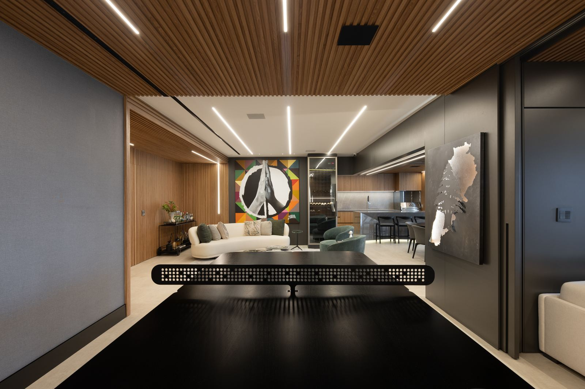

[PREENCHER: name of the apartment]
[PREENCHER: cidade] — [PREENCHER: ano]
An interior design project for an apartment where slatted wood sets the tone. It rises up the walls, runs across the ceiling and ties together the living spaces, which open onto one another, while recessed lines of light follow the rhythm of the slats.
Against this warm, neutral backdrop, only a few pieces take center stage: a boldly colored canvas in the living room, the curved sofa, the glass tables and the games room. In the private rooms the palette grows calmer, with grays, soft fabrics and custom joinery, from the walk-in closet to the bathroom.